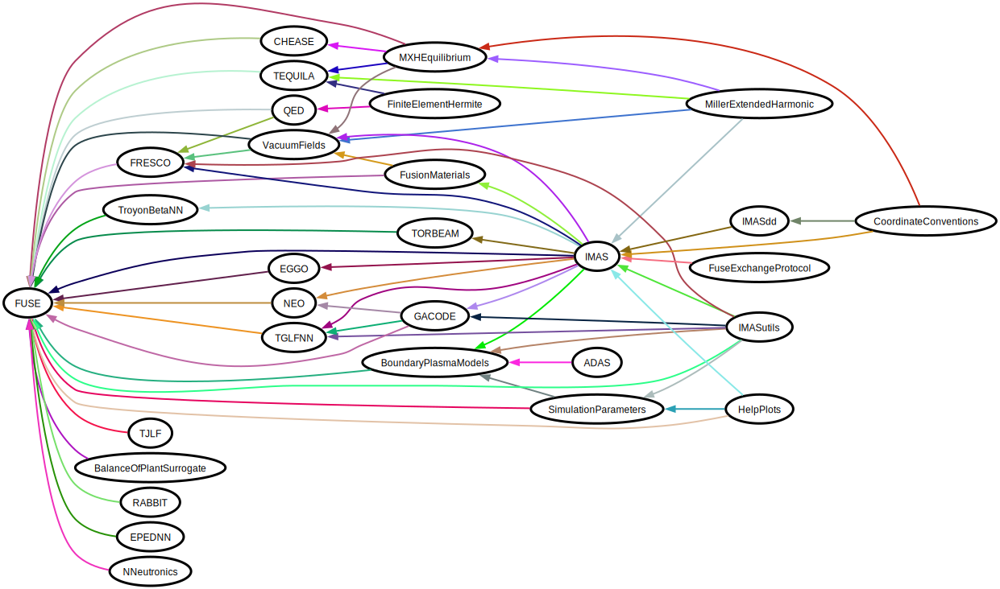

Ecosystem
The FUSE project is built upon multiple Julia packages, many of which reside in the https://github.com/ProjectTorreyPines organization on GitHub.

- ADAS [repo]
- BalanceOfPlantSurrogate [repo]
- BoundaryPlasmaModels [repo]
- CHEASE [repo]
- CoordinateConventions [repo]
- EGGO [repo]
- EPEDNN [repo]
- FRESCO [repo]
- FiniteElementHermite [repo]
- FuseExchangeProtocol [repo]
- FusionMaterials [repo]
- GACODE [repo]
- HelpPlots [repo]
- IMAS [repo]
- IMASdd [repo]
- IMASutils [repo]
- MXHEquilibrium [repo]
- MillerExtendedHarmonic [repo]
- NEO [repo]
- NNeutronics [repo]
- QED [repo]
- RABBIT [repo]
- SimulationParameters [repo]
- TEQUILA [repo]
- TGLFNN [repo]
- TJLF [repo]
- TORBEAM [repo]
- ThermalSystemModels [repo]
- TroyonBetaNN [repo]
- VacuumFields [repo]